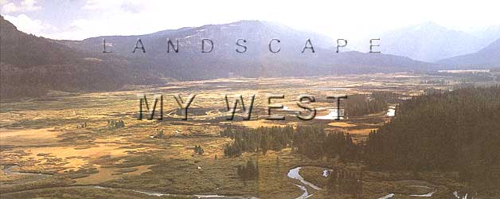
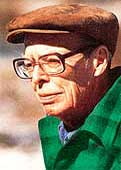
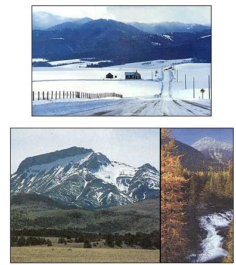
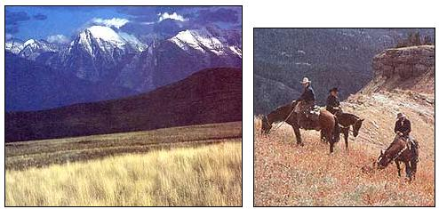

Contemplations on the past and the future of the northern Rockies.
A.B. GUTHRIE AWARDED CONSERVATION Honor" was the headline over a story appearing in Montana's Great Falls Tribune this past October. The piece went on to say: "Author A.B. Guthrie, Jr., of Choteau was named Conservationist of the Year by the Montana Environmental Information Center during its 15th annual rendezvous Saturday at Missoula. The award is a recognition of the contributions that A.B. Guthrie has made to the environmental movement over the last several years . . . . ' A collection of Guthrie's environmental essays, Big Sky, Fair Land has recently been published by Northland Press of Flag-staff, Arizona. The Montana Audubon Council recently recognized Guthrie for the best magazine article of the year . . . . " And so on.
A related story in the Sunday Missoulian noted that while both the Republican and Democratic gubernatorial candidates were guest speakers at the Montana Environmental Information Center banquet, "Neither candidate received a standing ovation . . . . Both candidates received polite but unenthusiastic applause. The enthusiasm of the audience . . . was reserved for one of their own. Novelist A.B. Guthrie of Choteau, perhaps the most renowned of Montana writers, a Pulitzer Prize winner, stood graciously when he was named the MEIC's Conservationist of the Year . . . . 'I'm honored and grateful and I thank you all,' said Guthrie with characteristic economy of style."
Spirited octogenarian. Outspoken environmentalist. Celebrated author of The Big Sky, The Way West and a quartet more of the most evocative and accurate novels of the West ever written. We are honored to have A.B. "Bud" Guthrie, Jr., launch our invitational series of regional contemplations.
I HAVE LIVED THE GREATER PART OF my life in the American West, not of necessity but, save for my young and dependent years, by personal choice. It is my physical as well as my spiritual home.
My West is the northern Rocky Mountain West, the states of Montana, Wyoming, the western Dakotas, Idaho, Colorado and bits of Utah and Nevada.
I have lived comfortably enough elsewhere, in New York State, in California and for 20-odd rich and fondly remembered years in Kentucky. But wherever I was, my center of the world, my point of outlook on the universe, was the West. After being afield, I have returned by numerous routes on various carriers, and never have I approached home, never seen the beginnings of my West, with a lessening of old elation.
The little things. The harbingers. The first magpie seen while driving through Nebraska. A waitress in eastern Wyoming who answers my request with "You betcha." The appearance of weeds, unnamed but representative, along the railroad right-of-way in North Dakota. Horned larks and long-spurs along the roadside out of Chamberlain, South Dakota. Small incidents, these, yet also signs, introductions, promises of things to come. And then the great blue lift of the Rocky Mountains.
Make no mistakes. I have my complaints. The wind that sweeps the eastern front of the mountains can be fierce, and, fierce or not, it is almost as constant as the sun. Winter weather can be lethal. People do perish, if not often, in the snowy cold. The blazing afternoons of summer can induce sunstroke. Women, left alone in their windblown and creaking homes on the plains, have lost their minds while their men sought work. The long moan, the long scream, of the wind. It frazzles nerves.
I have cursed the wind one day only to smile the next when not a twig stirred. I have cursed the fingering cold that feels inside clothes for the very seat of life, but I know that relief will come and probably soon, relief in the form of the warm embracing breezes of the chinook. It is then that a man wants to throw his hat in the air and cry out, "By God, this is a great land! This is great country!" He celebrates then and in the long evenings of summer when the day cools and the aspen leaves quit their quaking. The almost never-failing hour of no wind.
Here is a country that constantly asks forgiveness for its excesses and is constantly forgiven.
Sometimes, though not often, I ask myself what binds me to the West. Is it memory, sweetened by time, of childhood and boyhood? Is it long familiarity with field and stream, mountain and meadow? Is it just long residence and subsequent reluctance to think of any other section as home? Am I just old and lazy with a headful of ancient and useless recollections? What is it?
I GO BACK A LONG WAY, TO THE EARLIEST years of this century when, as a baby, I was brought to Montana from my birthplace in Indiana. The little settlement of Choteau, like other small and sequestered camps on the high plains, lacked electricity. It lacked telephones. Miles from any railroad, it depended for supplies on freight wagons. There is the rustle of chaps in my ears and the clinking of spurs on the plank sidewalks, and a team stands hipshot at a hitching post by the general store. I smell stale beer and the breath of whiskey as I walk past saloons, and now there is the cry of new-fallen snow under my heels, and the mail and passenger coach comes into town on a run, its iron tires striking sparks from the gravel of the street.
I come home from my little wanderings, and Mother is preparing a meal or cleaning lamp chimneys, or stoking the wood-and-coal range or making beds or carrying out slop. She's always busy. I don't think about it then, but she never has time to rest.
Those were wearing and demanding days, hard on limb, muscle, endurance and patience, and hard on eyes that tried to read at night under the dim and wavering light of a coal-oil lamp. And especially hard on women, who, in addition to the other chores of a household, including the care of children, had to set out three squares a day, for no married man thought of taking lunch in town, though old Soo Son kept a good restaurant.
Yet I remember little complaining, whether by woman or man. Things had to be done, and they got done, for that was the way of living.
But it was a wonderful time for a young and growing boy, with fields, thickets and streams within walking distance in nearly every direction. There were gophers to be snared or, when the boy got older, to be shot with a single-shot .22. There were grouse in the buckbrush, ducks on the ponds and, best maybe of all, fish in the streams.
The first trout. I caught it when I was eight or nine and fishing with my father; a trout near a pound in size, big for a cutthroat, and I fell on it after I had horsed it out of the water without skill. A Black Gnat, I remember, was the fly that did the trick.
A few years later, my imagination stirred by reading and conversation with my father, I found a rusted spur near an old corral, and it became Andy Adams, a cowboy up from Texas. A buffalo skull, unearthed from a onetime wallow, grew into a great herd, a solid carpet of animals moving toward the Teton River. I wander up Cashman coulee, four miles from town, and all that remains of Johnny Cashman's homestead is a flat stone that was his doorstep, and I am alone there, with the sound of the breeze in my ears and the sound of time in my head, and I feel lonely and good.
Such memories are mine, and mine alone, and they live with me in my country, but I doubt they by themselves are enough to keep me here.
I ONCE SAID OF THE WEST THAT IT was America's great adventure of the spirit. It was in our hearts and our heads and perhaps ours by acquisition from the westward push of earlier men in other countries. At any rate, the first colonists were little more than settled before men began pushing at the mountains to the west. They made it to Pennsylvania and the Ohio River and founded towns along it. They came over the Wilderness Trail into Tennessee and Kentucky. Farther on ran the Mississippi and the land beyond, the land not ours yet, and some men said to hell with that and crossed over and put up cabins. And these men were just the beginnings of America's westering.
For the West was and is a state of mind, evident to this day. Say "West" in the East, and the hearer's eyes may shine with distance, and he may confess a longing for a cabin on the banks of a good trout stream. A good many easterners visit the West and elect to remain if they can find means of livelihood, and some, having visited, choose to return. It is incidental that these transplants often become the best environmentalists, for they have seen what man has done in the East and hope not to see it repeated.
It is too bad or very good, according to viewpoint, that my West offers little in the way of fortune or jobs. Location and climate work against both. The politicians vow they will change things. The chambers of commerce wear faces of cheer to mask disappointment. Both contend we have only to exploit our natural resources to find prosperity. To which one might ask: What other resources in addition to coal, which is already being mined? Montana and Wyoming have lost population in recent years, and none of the other states in my survey have grown much, if you exclude Nevada, which one-armed bandits maintain.
I am just as well satisfied with lack of growth. Perhaps I'm being selfish, but I hate the ancient and seductive lie that bigger is better. Bigger, oftener than not, is worse. Witness Los Angeles, where the atmosphere is an insult to lungs. Witness almost any part of California where traffic is so thick as to promise gridlock. Witness Denver, a toxic exception to my West, where citizens are beginning to bemoan the city's growth. Witness New York, Chicago, Miami. Then ask, what's wrong with stability? Alexander Pope said that to stay where you are is somewhat to advance. Amen to that.
Often overlooked or dismissed entirely is our prime asset. It is space; room, as Joseph Kinsey Howard said, to swing elbow and mind. That's what men need and too often destroy. Space, for humans and wildlife and nature. We have it in my West, and, despite pesticides and herbicides and the best efforts of the Corps of Engineers and the Bureau of Reclamation, we have some lively streams and healthy trout. And, except for a few spots, we have clean air, and the sun rises and sets in glory, and the soul of man finds a place.
I DRIVE OVER THE HIGH PLAINS, AND I see ahead the great mountains of Colorado. Or I have cut north earlier and come to the impossible, breathless thrust of the Grand Tetons.
Or I tour through the sagebrush and pronghorns of Wyoming, and here is Independence Rock, the Sweetwater River and, beyond, Devil's Gap and the beginning slopes of South Pass where the mountain men, its discoverers, welcomed Marcus and Narcissa Whitman.
From western North Dakota through central Montana the blacktop runs dark through snow-fields, glitter-white under the sun, and ahead is the horizon and distant beyond it another and another.
And it is all good, all these things. It is home again.
I AM SITTING AT MY DESK, THINKING of values, trying for words to put on the blank page that waits in my typewriter. Soon now the wild geese will be flying, shouting their courage as they wing for the nesting grounds in the north. Later, with the first snowstorm in the fall, they will head back for the south, honking encouragement to youngsters untried by distance. I have often wondered whether the leader of their wedged pattern ever tired of breaking trail through the hindering air and fell back while another took his place.
Last winter a herd of 20 or 30 antelopes cruised by my fence line, a sight I'd never before been treated to hereabouts, and just once elsewhere in Montana when I was a very small boy. I watched and wished them well, wanting to tell them to forget their fatal curiosity should an antelope hunting season ever open in Teton County.
On many a night I have lain awake listening to coyotes sing, their voices wild and desolate, crying the woes of the world.
IT IS LATE FEBRUARY NOW, THREE weeks or so after the storm king ordered a charge. First came the wildest wind I've ever known, 124 miles an hour by town measurement. Here, 25 miles to the west, it was probably stronger. Snow and sub-zero cold followed that opening sally. People who had to get about walked hunched over in their bundled clothes, leaving vapor trails as they went. The few cars that operated, operated with complaints, with protests unheard before.
But today the sun is shining, and a thawing warmth has returned to the world. They give hope that the hounds of spring have about finished their chase. In March the picketpin gophers will poke out from the warming soil. Bears will waken from their long slumber and make for the green fronds that grow in the Nature Conservancy's Pine Butte Swamp just five miles from here. The birds will be back, crows probably first, and nutcrackers, and then the smaller fry. Already the great horned owl is nesting.
Pasque-flowers will push through the ground juniper in a spot we have neglected in favor of nature's way. Then will come those lovely little vernal visitors: moss campion, forget-me-nots bluer than belief and dwarf phlox whiter than purity. We shall walk softly, careful not to tread on them. These are carpet flowers, not to be abused. Even as they still bloom, deck meadow and streamside and narrow-leaf balsam root splash yellow on the hills.
A high old time, that's springtime in my West. Come summer I'll look east over the tawny grasses to distances my eye cannot reach. And I'll look west to Ear Mountain and its shouldering masses. Ear Mountain, my friend, my private possession, as it is the possession of all who grew up in its shadow.
Sometimes in harsh weather I think of going elsewhere until spring. But where? Wouldn't I be uneasy in such a here-and-there life? Wouldn't I be wishing the days away until I could come home? Like a man waiting for an overdue train or plane, I see myself watching the clock, willing the minutes to pass.
In time I may have to join the "snowbirds" in their flight from the cold and their return when the grass starts to green. Maybe.
But not yet.
No,not yet.
|
 The first in a series of articlesby noted American authors: a celebration of the riches we have; a catalogue of what we have to lose. |
 Steve-Wirt |
 Left ""Ear Mountain, my friend, my private possession . . ."" Above: ""By God, fhb is a great land! This is great country!"" |
|
 once said of the West that it was America's great adventure of the spirit .... For the West was and is a state of mind. Say 'West' in the East and the hearer's eyes may shine with distance . . ."" |
|
|